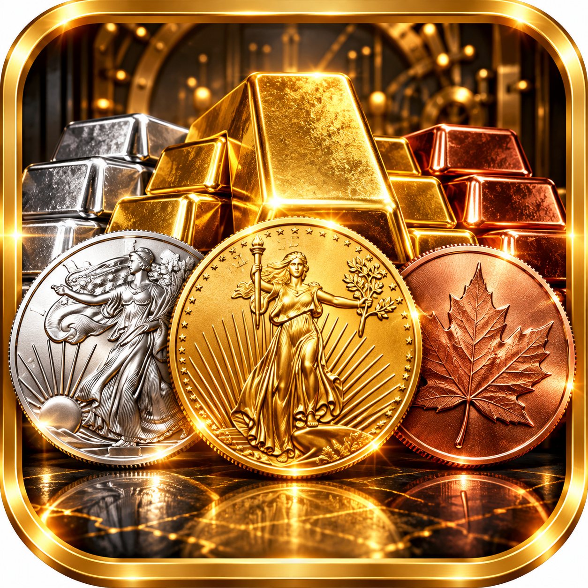

Android • In Testing
MetalKeep
Track and manage a physical precious-metals collection with a clean, privacy-focused toolkit. MetalKeep brings holdings, photos, prices, backups and long-term vault organization together without losing sight of the collection itself.
Built for stackers who want to know what they own — and keep that information under their control.